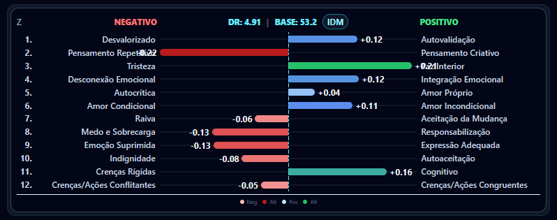
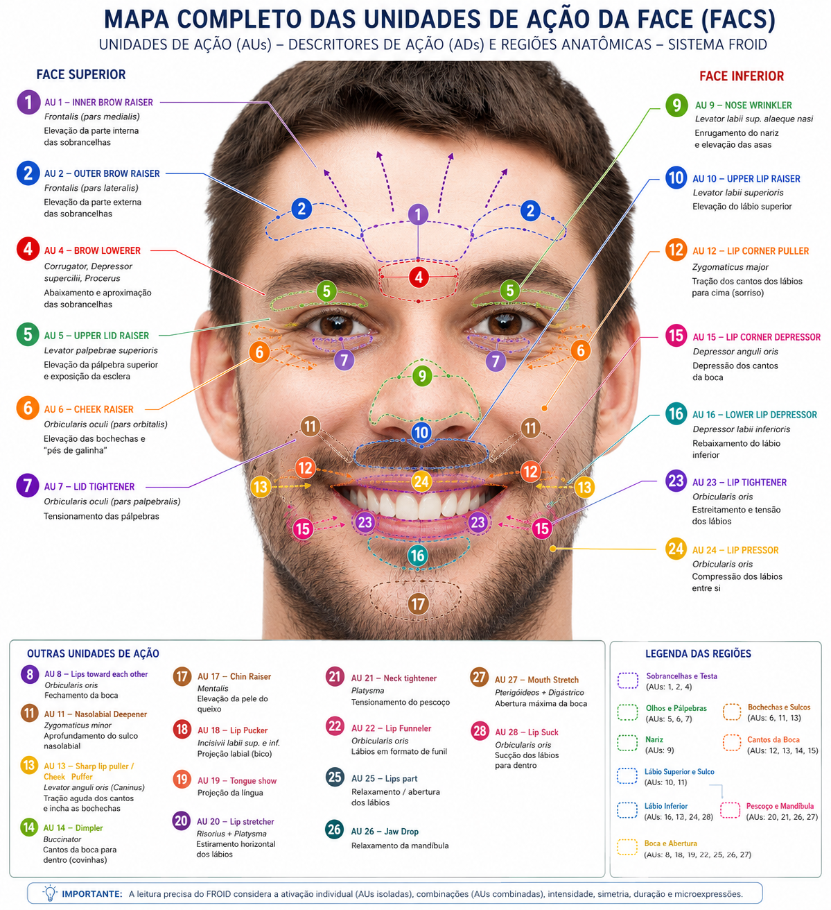

Voz: uma referência para a própria sessão
Os primeiros 60 segundos de calibração estabelecem a referência vocal. A distribuição da energia em 12 bandas é acompanhada em relação à sessão; características como F0, MFCC e ZCR integram a leitura acústica disponível.
Compare com uma régua: ela permite acompanhar variações, mas não dá, sozinha, um significado clínico ao que mudou. Uma banda de frequência não corresponde a uma emoção validada.
Face: do coeficiente ao padrão
O navegador extrai coeficientes numéricos do vídeo autorizado do paciente. Um único motor no servidor produz estimativas de Unidades de Ação e interpreta combinações, preservando a lateralidade e as ambiguidades.
Detalhes técnicos das estimativas de AU
O contrato mantém 16 campos. Quinze possuem mapeamentos aproximados, dependentes dos coeficientes recebidos. AU23 permanece não apurada. AU17 utiliza mouthShrugLower como proxy; AU23 não é derivada de rolamento labial. AU25 e AU27 não estão instrumentadas. Coeficientes brutos e estimativas legadas são preservados sem converter ausência em valor fictício.
Essas estimativas não equivalem a codificação FACS certificada. As combinações são organizadas em sete famílias de padrões compatíveis.
Nos mesmos 60 segundos da calibração vocal, o FROID registra uma referência facial do próprio paciente: o valor típico de cada movimento em repouso e o quanto ele oscila naturalmente. Nesta fase ela está em medição: registra quanto cada movimento se afastou do repouso, mas ainda não filtra nem reclassifica padrões. O limiar será definido a partir de sessões reais.
No relatório, os movimentos faciais aparecem por corte, com o minuto da sessão, a fala daquele momento e a proporção da sessão em que o rosto foi de fato medido.
Consistência que chega à tela e ao relatório
- A mesma variante precisa reaparecer em pelo menos dois quadros distintos.
- Quadros repetidos ou fora de ordem não reforçam uma observação.
- Leituras vencidas deixam de representar o estado atual.
- Ausência de informação é declarada, não preenchida.
- Painel e relatório usam os eventos do mesmo motor.
Preservar a ambiguidade evita escolher uma família apenas pela ordem das regras. Exigir repetição pode deixar passar expressões muito breves; isso não é uma certificação de detecção de microexpressões.
Arquitetura com responsabilidades distintas
Extração facial no navegador, interpretação no servidor e processamento vocal em infraestrutura dedicada compõem a arquitetura definida para esta versão. A transmissão da videochamada e o fluxo da análise facial são percursos distintos.
As medidas, na tela



Ative suas 10 sessões clínicas gratuitas
Todo profissional cadastrado recebe 10 sessões gratuitas, válidas por 14 dias, sem cartão de crédito e sem compromisso. No cadastro você informa seus dados profissionais e o registro no conselho (CRP ou CRM).
O teste vale uma vez por conta. Ferramenta de apoio à escuta clínica: não substitui avaliação, diagnóstico ou julgamento profissional.